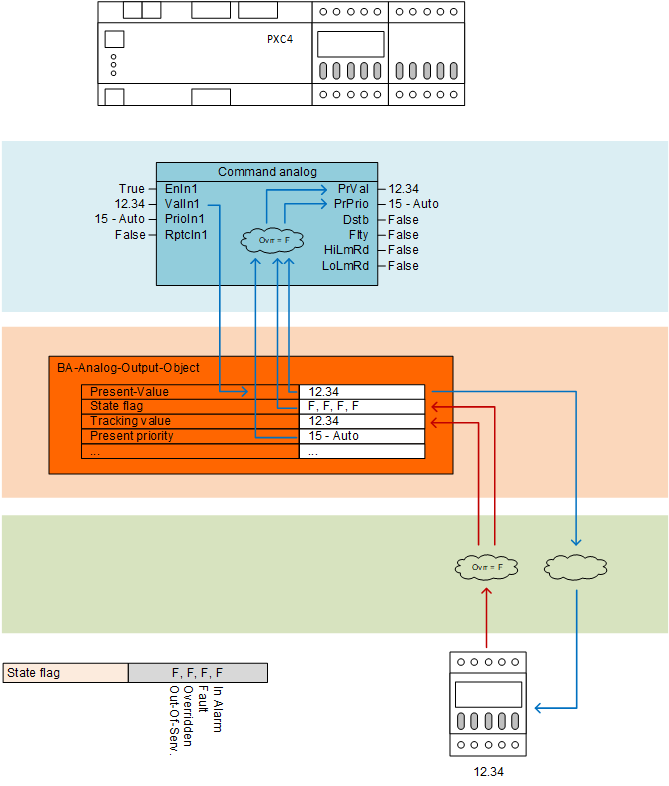
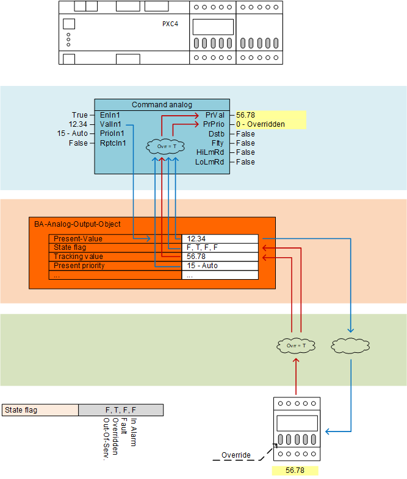
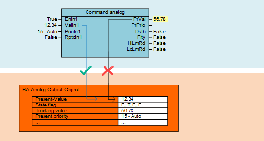

覆盖功能块命令的行为
Normal operation
对于正常操作（输出 BACnet 对象未被覆盖），功能块的输出 [PrVal] 提供属性“当前值”的值。该功能块监视 BACnet 对象的“状态标志”中的“覆盖”位以检测覆盖状态。
属性“当前值”被替换为通过输入 [ValIn1] 在 BACnet 对象上命令的值 (12.34)。控制器从 BACnet 对象接收该值并将其提供给 I/O 模块。 I/O 模块将该值转换为其物理表示形式并将其提供给现场设备。
如果 I/O 模块上的值未被覆盖，则模块会将此操作状态返回给控制器，并且该状态通过位“Override”在属性“状态标志”中的 BACnet 对象上表示。值“False”表示输出未被覆盖。
I/O 模块还将输出值返回给控制器。返回的值保存到 BACnet 对象的属性“跟踪值”中。

Override on I/O module
如果 I/O 模块上的输出被覆盖，则模块向控制器提供操作状态。覆盖状态由输出 BACnet 对象的属性“状态标志”中“覆盖”位的值“True”表示。
输出的覆盖值也由 I/O 模块返回到控制器，并保存到 BACnet 对象的属性“跟踪值”中。
如果检测到属性“Status flag”的位“Override”上的值“True”，则功能块从属性“Tracking value”获取值并将其提供给输出 [PrVal]，从而将 [PrVal] 处的值同步到 I/O 模块上的值。
除了显示输出的覆盖状态之外，功能块还在输出 [PrPrio] 上设置值 0（覆盖）。

Override - online mode
在在线模式下，CFC 块的“PrVal”显示 BACnet 对象的当前值。引脚从 BACnet 对象中读取值Properties > BACnet properties，但不会覆盖它。您可以暂时覆盖 CFC 块的‘PrVal’来测试程序逻辑，但是：
- this updated value does not update the BACnet object, and therefore not visible on a BACnet browser / management station.
- this updated value is temporary; as soon as the BACnet object gets updated, the ‘PrVal’ pin gets refreshed.
要逻辑更新'PrVal'，建议更新相关的BACnet对象，即function blocks和它的BACnet objects.
